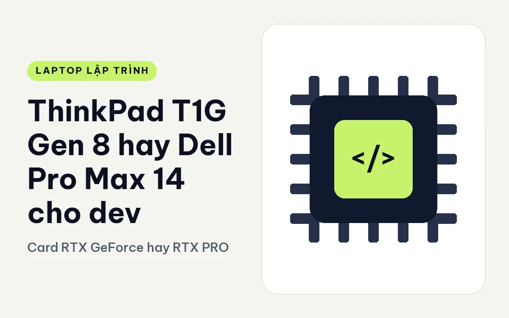
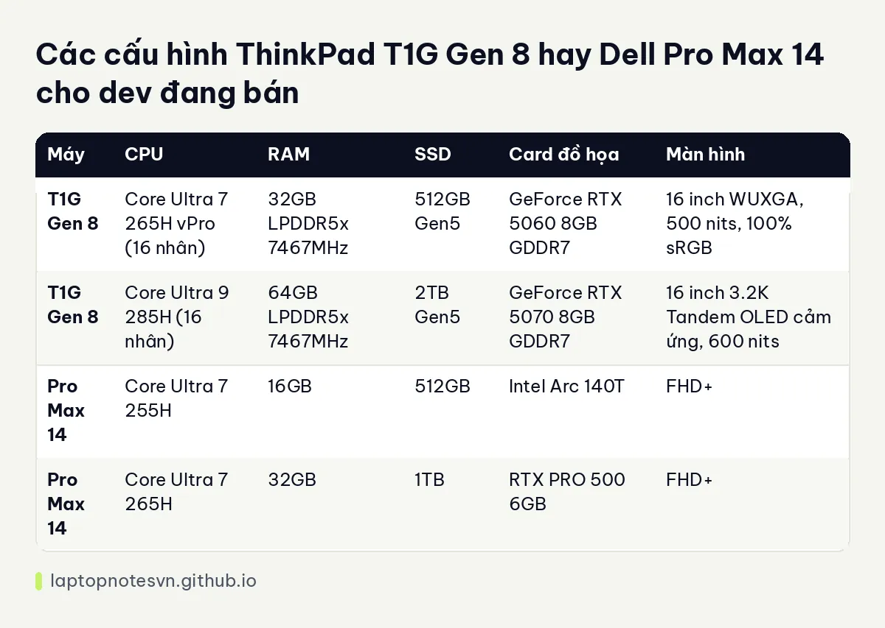

ThinkPad T1G Gen 8 hay Dell Pro Max 14 cho dev - Card RTX GeForce hay RTX PRO

Hai máy này ít khi được đặt cạnh nhau, nhưng nếu bạn là dev cần card đồ họa rời mà không muốn máy quá to thì danh sách rút gọn sẽ có cả hai. T1G Gen 8 là máy 16 inch dùng card GeForce RTX thế hệ mới. Pro Max 14 là máy trạm 14 inch dùng card RTX PRO. Hai cách làm khác nhau, đối tượng khác nhau, và chọn đúng bắt đầu từ việc hiểu mình cần gì.
Bên Lenovo là ThinkPad T1G Gen 8.
Bên Dell là Dell Pro Max 14 MC14250.
ThinkPad T1G Gen 8 và Dell Pro Max 14 khác nhau ở vỏ máy
T1G Gen 8 nặng 1,84 kg, pin 90Wh, màn 16 inch. Pro Max 14 nặng 1,83 kg, dày 14,79 đến 24,65 mm, pin 72Wh, màn 14 inch. Hai máy nặng ngang nhau nhưng T1G có màn lớn hơn và pin dung lượng lớn hơn, nghĩa là diện tích đáy cũng lớn hơn. Nếu bạn cần máy cầm gọn, Pro Max 14 là lựa chọn dễ nhét ba lô hơn.
T1G có nhiều điểm thân thiện với người sửa máy: SSD và loa là các bộ phận CRU (khách hàng tự thay), RAM LPCAMM2 nâng cấp được. Máy hỗ trợ tới 4 màn hình và bàn phím có độ nảy phím 1,5 mm. Pro Max 14 có 2 cổng Thunderbolt 4, HDMI 2.1, RJ45 10Gbps và RAM LPCAMM2 từ 16GB đến 64GB.
Cả hai máy đều dùng LPCAMM2 nên RAM của cả hai có thể thay, một điểm hiếm gặp ở dòng laptop mỏng.
CPU, RAM và SSD của từng bản
| Máy | CPU | RAM | SSD | Card đồ họa | Màn hình |
|---|---|---|---|---|---|
| T1G Gen 8 | Core Ultra 7 265H vPro (16 nhân) | 32GB LPDDR5x 7467MHz | 512GB Gen5 | GeForce RTX 5060 8GB GDDR7 | 16 inch WUXGA, 500 nits, 100% sRGB |
| T1G Gen 8 | Core Ultra 9 285H (16 nhân) | 64GB LPDDR5x 7467MHz | 2TB Gen5 | GeForce RTX 5070 8GB GDDR7 | 16 inch 3.2K Tandem OLED cảm ứng, 600 nits |
| Pro Max 14 | Core Ultra 7 255H | 16GB | 512GB | Intel Arc 140T | FHD+ |
| Pro Max 14 | Core Ultra 7 265H | 32GB | 1TB | RTX PRO 500 6GB | FHD+ |
T1G dùng card GeForce RTX 5060 và 5070, đều 8GB GDDR7. Pro Max 14 chỉ có một bản có card rời là RTX PRO 500 6GB, yếu hơn đáng kể. Nếu bạn muốn tận dụng CUDA hoặc thử nghiệm mô hình trên card, T1G có lợi thế rõ ở cả hai bản.

Khoảng cách về RAM và SSD cũng đáng kể. Bản T1G cao đi kèm 64GB RAM và SSD 2TB, trong khi Pro Max 14 tối đa 32GB và 1TB ở cấu hình đang bán. Muốn biết tại sao RAM quan trọng khi code, đọc bài lập trình viên cần bao nhiêu RAM.
Một điểm khác biệt về dòng card: GeForce hướng tới game và sáng tạo đa dụng, còn RTX PRO là dòng chuyên nghiệp với driver được chứng nhận cho các phần mềm CAD, mô phỏng. Nếu bạn chỉ code và thử AI thì GeForce là đủ, còn nếu công việc có phần mềm kỹ thuật cần chứng nhận thì RTX PRO có ý nghĩa.
Chia theo kiểu việc lập trình
- Dev AI, CUDA, game engine: T1G với RTX 5060 hoặc 5070.
- Dev web, mobile, backend: card rời không cần thiết, Pro Max 14 bản Arc tích hợp là đủ nhưng bạn đang trả tiền cho dòng máy trạm.
- Dev ngồi nhiều trước màn lớn: T1G 16 inch.
- Dev cần cắm dây mạng nhanh: Pro Max 14 có RJ45 10Gbps.
Màn hình và thời gian ngồi trước máy
T1G có hai lựa chọn màn: WUXGA IPS 500 nits phủ 100% sRGB, hoặc 3.2K Tandem OLED cảm ứng 600 nits phủ 100% DCI-P3 với tần số quét 40 đến 120Hz. Pro Max 14 trong dữ liệu chỉ có độ phân giải FHD+ ở hai bản đầu, chi tiết độ sáng không được ghi.
Với dev, màn OLED có chữ sắc nét và độ tương phản cao, đọc code lâu thường dễ chịu hơn, nhưng đó là cảm nhận cá nhân. Màn 16 inch cũng chứa được hai cửa sổ code cạnh nhau thoải mái hơn màn 14 inch. Nếu bạn quen một màn phụ ở nhà, sự khác biệt này nhỏ lại.
Bàn phím T1G có độ nảy phím 1,5 mm, thuộc nhóm thoải mái cho người gõ nhiều. Dữ liệu Pro Max 14 không ghi thông số bàn phím nên không đem ra so.
Về cổng và mở rộng, T1G hỗ trợ tới 4 màn hình, hợp dev thích dựng bàn làm việc nhiều màn ở nhà rồi mang máy đi làm. Pro Max 14 có RJ45 10Gbps và hai cổng Thunderbolt 4, hợp nơi có mạng nội bộ nhanh. Hai kiểu dùng này khác nhau, nên hãy nghĩ tới chỗ bạn ngồi nhiều nhất trong tuần trước khi chọn.
Chọn ThinkPad T1G Gen 8 hay Dell Pro Max 14
Chọn T1G Gen 8 nếu bạn cần card GeForce mạnh, màn 16 inch, RAM và SSD lớn, và thích khả năng tự sửa. Bài T1G Gen 8 cho lập trình mô tả thêm.
Chọn Pro Max 14 nếu bạn muốn máy 14 inch gọn, cần RJ45 10Gbps và công việc không đòi card mạnh. Hãy cân nhắc bản Premium nếu bạn muốn card RTX PRO mạnh hơn trong thân máy 14 inch.
Câu hỏi quyết định: card đồ họa của bạn dùng để làm gì? Nếu trả lời là AI, game hoặc CUDA, chọn T1G. Nếu trả lời là "chưa biết", Pro Max 14 bản Arc rẻ hơn mà vẫn đủ.
Đăng ngày 09/11/2026